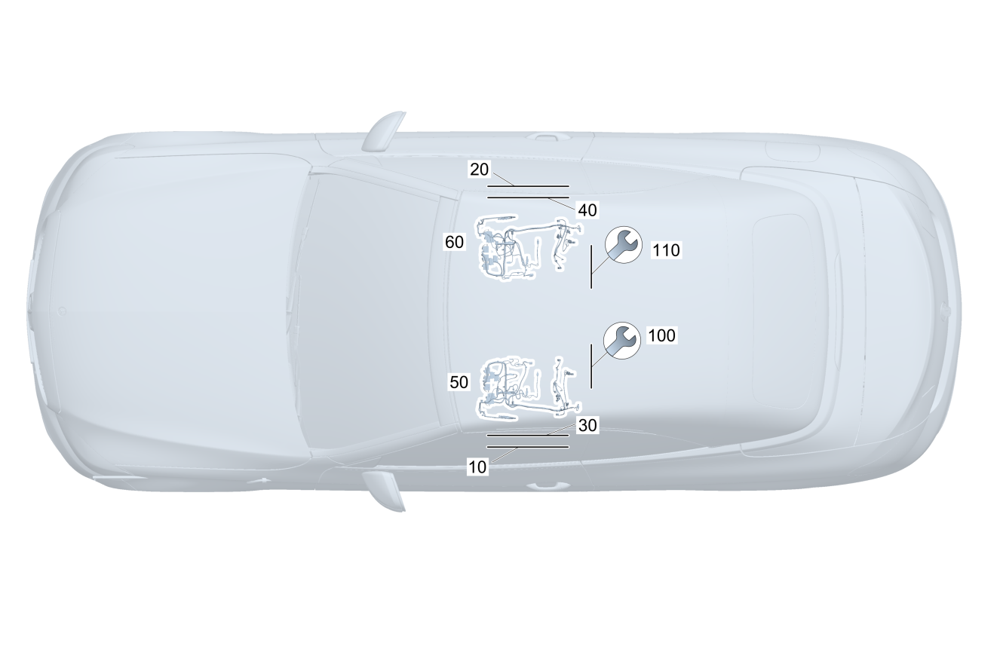

| № | Артикул | Название | Кол. | Примечание | Ограничение |
|---|---|---|---|---|---|
| 10 | A 205 540 35 35 | Электрический жгут (ELECTRICAL WIRING HARNESS) | 1 | Адаптер блока управления датчиков веса Рулевое управление: Вправо | U10 |
| 10 | A 205 540 35 35 | Электрический жгут (ELECTRICAL WIRING HARNESS) | 1 | Адаптер блока управления датчиков веса Рулевое управление: Вправо | 555+U10 |
| 10 | A 172 540 07 10 | Электрический жгут (ELECTRICAL WIRING HARNESS) | 1 | Адаптер блока управления датчиков веса Рулевое управление: Вправо | (809/800)+555+U10 |
| 10 | A 172 540 07 10 | Электрический жгут (ELECTRICAL WIRING HARNESS) | 1 | Адаптер блока управления датчиков веса Рулевое управление: Вправо | 555+U10 |
| 10 | A 176 870 01 04 | Электрический жгут (ELECTRICAL WIRING HARNESS) | 1 | Адаптер блока управления датчиков веса | 555 |
| 20 | A 205 540 35 35 | Электрический жгут (ELECTRICAL WIRING HARNESS) | 1 | Адаптер блока управления датчиков веса Рулевое управление: Влево | U10 |
| 20 | A 205 540 35 35 | Электрический жгут (ELECTRICAL WIRING HARNESS) | 1 | Адаптер блока управления датчиков веса Рулевое управление: Влево | 555+U10 |
| 20 | A 172 540 07 10 | Электрический жгут (ELECTRICAL WIRING HARNESS) | 1 | Адаптер блока управления датчиков веса | (809/800)+555+U10 |
| 20 | A 172 540 07 10 | Электрический жгут (ELECTRICAL WIRING HARNESS) | 1 | Адаптер блока управления датчиков веса | 555+U10 |
| 30 | A 205 540 03 64 | Электрический жгут (ELECTRICAL WIRING HARNESS) | 1 | Плафон освещения пространства для ног (левый) Рулевое управление: Влево | 877 |
| 30 | A 205 540 03 65 | Электрический жгут (ELECTRICAL WIRING HARNESS) | 1 | Плафон освещения пространства для ног (левый) Рулевое управление: Вправо | 877 |
| 40 | A 205 540 03 65 | Электрический жгут (ELECTRICAL WIRING HARNESS) | 1 | Плафон освещения пространства для ног (правый) Рулевое управление: Влево | 877 |
| 40 | A 205 540 03 64 | Электрический жгут (ELECTRICAL WIRING HARNESS) | 1 | Плафон освещения пространства для ног (правый) Рулевое управление: Вправо | 877 |
| 50 | A 205 540 56 44 | Электрический жгут (ELECTRICAL WIRING HARNESS) | 1 | Сиденье переднее (левое) с частичным электроприводом регулировки положения | |
| 50 | A 205 540 59 44 | Электрический жгут (ELECTRICAL WIRING HARNESS) | 1 | Сиденье переднее (левое) с частичным электроприводом регулировки положения Рулевое управление: Влево | 873 |
| 50 | A 205 540 69 44 | Электрический жгут (ELECTRICAL WIRING HARNESS) | 1 | Сиденье переднее (левое) с частичным электроприводом регулировки положения Рулевое управление: Вправо | 873 |
| 50 | A 205 540 61 44 | Электрический жгут (ELECTRICAL WIRING HARNESS) | 1 | Сиденье переднее (левое) с частичным электроприводом регулировки положения Рулевое управление: Влево | 401/401+873 |
| 50 | A 205 540 73 44 | Электрический жгут (ELECTRICAL WIRING HARNESS) | 1 | Сиденье переднее (левое) с частичным электроприводом регулировки положения Рулевое управление: Вправо | 401/401+873 |
| 50 | A 205 540 50 44 | Электрический жгут (ELECTRICAL WIRING HARNESS) | 1 | Сиденье переднее (левое) с частичным электроприводом регулировки положения Рулевое управление: Влево | (403/499)+873 |
| 50 | A 205 540 50 44 | Электрический жгут (ELECTRICAL WIRING HARNESS) | 1 | Сиденье переднее (левое) с частичным электроприводом регулировки положения Рулевое управление: Влево | 403+873 |
| 50 | A 205 540 70 44 | Электрический жгут (ELECTRICAL WIRING HARNESS) | 1 | Сиденье переднее (левое) с частичным электроприводом регулировки положения Рулевое управление: Вправо | (403/499)+873 |
| 50 | A 205 540 70 44 | Электрический жгут (ELECTRICAL WIRING HARNESS) | 1 | Сиденье переднее (левое) с частичным электроприводом регулировки положения Рулевое управление: Вправо | 403+873 |
| 50 | A 205 540 53 44 | Электрический жгут (ELECTRICAL WIRING HARNESS) | 1 | Сиденье переднее (левое) с частичным электроприводом регулировки положения Рулевое управление: Влево | 401+(403/499)/401+(403/499)+873 |
| 50 | A 205 540 53 44 | Электрический жгут (ELECTRICAL WIRING HARNESS) | 1 | Сиденье переднее (левое) с частичным электроприводом регулировки положения Рулевое управление: Влево | 401+403/401+403+873 |
| 50 | A 205 540 74 44 | Электрический жгут (ELECTRICAL WIRING HARNESS) | 1 | Сиденье переднее (левое) с частичным электроприводом регулировки положения Рулевое управление: Вправо | 401+(403/499)/401+(403/499)+873 |
| 50 | A 205 540 74 44 | Электрический жгут (ELECTRICAL WIRING HARNESS) | 1 | Сиденье переднее (левое) с частичным электроприводом регулировки положения Рулевое управление: Вправо | 401+403/401+403+873 |
| 50 | A 205 540 57 44 | Электрический жгут (ELECTRICAL WIRING HARNESS) | 1 | Сиденье переднее (левое) с частичным электроприводом регулировки положения | P65 |
| 50 | A 205 540 60 44 | Электрический жгут (ELECTRICAL WIRING HARNESS) | 1 | Сиденье переднее (левое) с частичным электроприводом регулировки положения Рулевое управление: Влево | P65+873 |
| 50 | A 205 540 71 44 | Электрический жгут (ELECTRICAL WIRING HARNESS) | 1 | Сиденье переднее (левое) с частичным электроприводом регулировки положения Рулевое управление: Вправо | P65+873 |
| 50 | A 205 540 62 44 | Электрический жгут (ELECTRICAL WIRING HARNESS) | 1 | Сиденье переднее (левое) с частичным электроприводом регулировки положения Рулевое управление: Влево | P65+401/P65+401+873 |
| 50 | A 205 540 75 44 | Электрический жгут (ELECTRICAL WIRING HARNESS) | 1 | Сиденье переднее (левое) с частичным электроприводом регулировки положения Рулевое управление: Вправо | P65+401/P65+401+873 |
| 50 | A 205 540 51 44 | Электрический жгут (ELECTRICAL WIRING HARNESS) | 1 | Сиденье переднее (левое) с частичным электроприводом регулировки положения Рулевое управление: Влево | P65+(403/499)+873 |
| 50 | A 205 540 51 44 | Электрический жгут (ELECTRICAL WIRING HARNESS) | 1 | Сиденье переднее (левое) с частичным электроприводом регулировки положения Рулевое управление: Влево | P65+403+873 |
| 50 | A 205 540 72 44 | Электрический жгут (ELECTRICAL WIRING HARNESS) | 1 | Сиденье переднее (левое) с частичным электроприводом регулировки положения Рулевое управление: Вправо | P65+(403/499)+873 |
| 50 | A 205 540 72 44 | Электрический жгут (ELECTRICAL WIRING HARNESS) | 1 | Сиденье переднее (левое) с частичным электроприводом регулировки положения Рулевое управление: Вправо | P65+403+873 |
| 50 | A 205 540 54 44 | Электрический жгут (ELECTRICAL WIRING HARNESS) | 1 | Сиденье переднее (левое) с частичным электроприводом регулировки положения Рулевое управление: Влево | P65+401+(403/499)/P65+401+(403/499)+873 |
| 50 | A 205 540 54 44 | Электрический жгут (ELECTRICAL WIRING HARNESS) | 1 | Сиденье переднее (левое) с частичным электроприводом регулировки положения Рулевое управление: Влево | P65+401+403/P65+401+403+873 |
| 50 | A 205 540 76 44 | Электрический жгут (ELECTRICAL WIRING HARNESS) | 1 | Сиденье переднее (левое) с частичным электроприводом регулировки положения Рулевое управление: Вправо | P65+401+(403/499)/P65+401+(403/499)+873 |
| 50 | A 205 540 76 44 | Электрический жгут (ELECTRICAL WIRING HARNESS) | 1 | Сиденье переднее (левое) с частичным электроприводом регулировки положения Рулевое управление: Вправо | P65+401+403/P65+401+403+873 |
| 50 | Q 000000000002 | Возможен заказ только отдельных компонентов жгута проводов | 1 | Сиденье переднее (левое) с частичным электроприводом регулировки положения | 809+P65 |
| 50 | Q 000000000002 | Возможен заказ только отдельных компонентов жгута проводов | 1 | Сиденье переднее (левое) с частичным электроприводом регулировки положения | P65 |
| 50 | A 205 540 12 62 | Электрический жгут (ELECTRICAL WIRING HARNESS) | 1 | Сиденье переднее (левое) с частичным электроприводом регулировки положения Рулевое управление: Влево | 809+P65+873 |
| 50 | A 205 540 12 62 | Электрический жгут (ELECTRICAL WIRING HARNESS) | 1 | Сиденье переднее (левое) с частичным электроприводом регулировки положения Рулевое управление: Влево | P65+873 |
| 50 | A 205 540 25 62 | Электрический жгут (ELECTRICAL WIRING HARNESS) | 1 | Сиденье переднее (левое) с частичным электроприводом регулировки положения Рулевое управление: Вправо | 809+P65+873 |
| 50 | A 205 540 25 62 | Электрический жгут (ELECTRICAL WIRING HARNESS) | 1 | Сиденье переднее (левое) с частичным электроприводом регулировки положения Рулевое управление: Вправо | P65+873 |
| 50 | Q 000000000002 | Возможен заказ только отдельных компонентов жгута проводов | 1 | Сиденье переднее (левое) с частичным электроприводом регулировки положения Рулевое управление: Влево | 809+(P65+401/P65+401+873) |
| 50 | Q 000000000002 | Возможен заказ только отдельных компонентов жгута проводов | 1 | Сиденье переднее (левое) с частичным электроприводом регулировки положения Рулевое управление: Влево | (P65+401/P65+401+873) |
| 50 | Q 000000000002 | Возможен заказ только отдельных компонентов жгута проводов | 1 | Сиденье переднее (левое) с частичным электроприводом регулировки положения Рулевое управление: Вправо | 809+(P65+401/P65+401+873) |
| 50 | Q 000000000002 | Возможен заказ только отдельных компонентов жгута проводов | 1 | Сиденье переднее (левое) с частичным электроприводом регулировки положения Рулевое управление: Вправо | (P65+401/P65+401+873) |
| 50 | A 205 540 14 62 | Электрический жгут (ELECTRICAL WIRING HARNESS) | 1 | Сиденье переднее (левое) с частичным электроприводом регулировки положения Рулевое управление: Влево | 809+P65+403+873 |
| 50 | A 205 540 14 62 | Электрический жгут (ELECTRICAL WIRING HARNESS) | 1 | Сиденье переднее (левое) с частичным электроприводом регулировки положения Рулевое управление: Влево | P65+403+873 |
| 50 | A 205 540 26 62 | Электрический жгут (ELECTRICAL WIRING HARNESS) | 1 | Сиденье переднее (левое) с частичным электроприводом регулировки положения Рулевое управление: Вправо | 809+P65+403+873 |
| 50 | A 205 540 26 62 | Электрический жгут (ELECTRICAL WIRING HARNESS) | 1 | Сиденье переднее (левое) с частичным электроприводом регулировки положения Рулевое управление: Вправо | P65+403+873 |
| 50 | Q 000000000002 | Возможен заказ только отдельных компонентов жгута проводов | 1 | Сиденье переднее (левое) с частичным электроприводом регулировки положения Рулевое управление: Влево | 809+(P65+401+403/P65+401+403+873) |
| 50 | Q 000000000002 | Возможен заказ только отдельных компонентов жгута проводов | 1 | Сиденье переднее (левое) с частичным электроприводом регулировки положения Рулевое управление: Влево | (P65+401+403/P65+401+403+873) |
| 50 | Q 000000000002 | Возможен заказ только отдельных компонентов жгута проводов | 1 | Сиденье переднее (левое) с частичным электроприводом регулировки положения Рулевое управление: Вправо | 809+(P65+401+403/P65+401+403+873) |
| 50 | Q 000000000002 | Возможен заказ только отдельных компонентов жгута проводов | 1 | Сиденье переднее (левое) с частичным электроприводом регулировки положения Рулевое управление: Вправо | (P65+401+403/P65+401+403+873) |
| 50 | A 205 540 91 45 | Электрический жгут (ELECTRICAL WIRING HARNESS) | 1 | Сиденье (переднее левое) с полным электроприводом регулировки положения (с функцией памяти) Рулевое управление: Влево | 275 |
| 50 | A 205 540 91 45 | Электрический жгут (ELECTRICAL WIRING HARNESS) | 1 | Сиденье (переднее левое) с полным электроприводом регулировки положения (с функцией памяти) Рулевое управление: Вправо | 241 |
| 50 | A 205 540 95 45 | Электрический жгут (ELECTRICAL WIRING HARNESS) | 1 | Сиденье (переднее левое) с полным электроприводом регулировки положения (с функцией памяти) Рулевое управление: Влево | 275+873 |
| 50 | A 205 540 95 45 | Электрический жгут (ELECTRICAL WIRING HARNESS) | 1 | Сиденье (переднее левое) с полным электроприводом регулировки положения (с функцией памяти) Рулевое управление: Вправо | 241+873 |
| 50 | A 205 540 87 45 | Электрический жгут (ELECTRICAL WIRING HARNESS) | 1 | Сиденье (переднее левое) с полным электроприводом регулировки положения (с функцией памяти) Рулевое управление: Влево | 275+401 |
| 50 | A 205 540 87 45 | Электрический жгут (ELECTRICAL WIRING HARNESS) | 1 | Сиденье (переднее левое) с полным электроприводом регулировки положения (с функцией памяти) Рулевое управление: Вправо | 241+401 |
| 50 | A 205 540 96 45 | Электрический жгут (ELECTRICAL WIRING HARNESS) | 1 | Сиденье (переднее левое) с полным электроприводом регулировки положения (с функцией памяти) Рулевое управление: Влево | 275+(403/499)+873 |
| 50 | A 205 540 96 45 | Электрический жгут (ELECTRICAL WIRING HARNESS) | 1 | Сиденье (переднее левое) с полным электроприводом регулировки положения (с функцией памяти) Рулевое управление: Влево | 275+403+873 |
| 50 | A 205 540 96 45 | Электрический жгут (ELECTRICAL WIRING HARNESS) | 1 | Сиденье (переднее левое) с полным электроприводом регулировки положения (с функцией памяти) Рулевое управление: Вправо | 241+(403/499)+873 |
| 50 | A 205 540 96 45 | Электрический жгут (ELECTRICAL WIRING HARNESS) | 1 | Сиденье (переднее левое) с полным электроприводом регулировки положения (с функцией памяти) Рулевое управление: Вправо | 241+403+873 |
| 50 | A 205 540 88 45 | Электрический жгут (ELECTRICAL WIRING HARNESS) | 1 | Сиденье (переднее левое) с полным электроприводом регулировки положения (с функцией памяти) Рулевое управление: Влево | 275+401+(403/499) |
| 50 | A 205 540 88 45 | Электрический жгут (ELECTRICAL WIRING HARNESS) | 1 | Сиденье (переднее левое) с полным электроприводом регулировки положения (с функцией памяти) Рулевое управление: Влево | 275+401+403 |
| 50 | A 205 540 88 45 | Электрический жгут (ELECTRICAL WIRING HARNESS) | 1 | Сиденье (переднее левое) с полным электроприводом регулировки положения (с функцией памяти) Рулевое управление: Вправо | 241+401+(403/499) |
| 50 | A 205 540 88 45 | Электрический жгут (ELECTRICAL WIRING HARNESS) | 1 | Сиденье (переднее левое) с полным электроприводом регулировки положения (с функцией памяти) Рулевое управление: Вправо | 241+401+403 |
| 50 | A 205 540 93 45 | Электрический жгут (ELECTRICAL WIRING HARNESS) | 1 | Сиденье (переднее левое) с полным электроприводом регулировки положения (с функцией памяти) Рулевое управление: Влево | 275+(460/494) |
| 50 | A 205 540 97 45 | Электрический жгут (ELECTRICAL WIRING HARNESS) | 1 | Сиденье (переднее левое) с полным электроприводом регулировки положения (с функцией памяти) Рулевое управление: Влево | 275+(460/494)+873 |
| 50 | A 205 540 89 45 | Электрический жгут (ELECTRICAL WIRING HARNESS) | 1 | Сиденье (переднее левое) с полным электроприводом регулировки положения (с функцией памяти) Рулевое управление: Влево | 275+(460/494)+401 |
| 50 | A 205 540 86 45 | Электрический жгут (ELECTRICAL WIRING HARNESS) | 1 | Сиденье (переднее левое) с полным электроприводом регулировки положения (с функцией памяти) Рулевое управление: Влево | 275+(460/494)+(403/499)+873 |
| 50 | A 205 540 86 45 | Электрический жгут (ELECTRICAL WIRING HARNESS) | 1 | Сиденье (переднее левое) с полным электроприводом регулировки положения (с функцией памяти) Рулевое управление: Влево | 275+(460/494)+403+873 |
| 50 | A 205 540 90 45 | Электрический жгут (ELECTRICAL WIRING HARNESS) | 1 | Сиденье (переднее левое) с полным электроприводом регулировки положения (с функцией памяти) Рулевое управление: Влево | 275+(460/494)+401+(403/499) |
| 50 | A 205 540 90 45 | Электрический жгут (ELECTRICAL WIRING HARNESS) | 1 | Сиденье (переднее левое) с полным электроприводом регулировки положения (с функцией памяти) Рулевое управление: Влево | 275+(460/494)+401+403 |
| 50 | A 205 540 98 61 | Электрический жгут (ELECTRICAL WIRING HARNESS) | 1 | Сиденье (переднее левое) с полным электроприводом регулировки положения (с функцией памяти) Рулевое управление: Влево | 809+275 |
| 50 | A 205 540 98 61 | Электрический жгут (ELECTRICAL WIRING HARNESS) | 1 | Сиденье (переднее левое) с полным электроприводом регулировки положения (с функцией памяти) Рулевое управление: Влево | 275 |
| 50 | A 205 540 98 61 | Электрический жгут (ELECTRICAL WIRING HARNESS) | 1 | Сиденье (переднее левое) с полным электроприводом регулировки положения (с функцией памяти) Рулевое управление: Вправо | 809+241 |
| 50 | A 205 540 98 61 | Электрический жгут (ELECTRICAL WIRING HARNESS) | 1 | Сиденье (переднее левое) с полным электроприводом регулировки положения (с функцией памяти) Рулевое управление: Вправо | 241 |
| 50 | A 205 540 00 62 | Электрический жгут (ELECTRICAL WIRING HARNESS) | 1 | Сиденье (переднее левое) с полным электроприводом регулировки положения (с функцией памяти) Рулевое управление: Влево | 809+275+873 |
| 50 | A 205 540 00 62 | Электрический жгут (ELECTRICAL WIRING HARNESS) | 1 | Сиденье (переднее левое) с полным электроприводом регулировки положения (с функцией памяти) Рулевое управление: Влево | 275+873 |
| 50 | A 205 540 00 62 | Электрический жгут (ELECTRICAL WIRING HARNESS) | 1 | Сиденье (переднее левое) с полным электроприводом регулировки положения (с функцией памяти) Рулевое управление: Вправо | 809+241+873 |
| 50 | A 205 540 00 62 | Электрический жгут (ELECTRICAL WIRING HARNESS) | 1 | Сиденье (переднее левое) с полным электроприводом регулировки положения (с функцией памяти) Рулевое управление: Вправо | 241+873 |
| 50 | A 205 540 04 62 | Электрический жгут (ELECTRICAL WIRING HARNESS) | 1 | Сиденье (переднее левое) с полным электроприводом регулировки положения (с функцией памяти) Рулевое управление: Влево | 809+275+401 |
| 50 | A 205 540 04 62 | Электрический жгут (ELECTRICAL WIRING HARNESS) | 1 | Сиденье (переднее левое) с полным электроприводом регулировки положения (с функцией памяти) Рулевое управление: Влево | 275+401 |
| 50 | A 205 540 04 62 | Электрический жгут (ELECTRICAL WIRING HARNESS) | 1 | Сиденье (переднее левое) с полным электроприводом регулировки положения (с функцией памяти) Рулевое управление: Вправо | 809+241+401 |
| 50 | A 205 540 04 62 | Электрический жгут (ELECTRICAL WIRING HARNESS) | 1 | Сиденье (переднее левое) с полным электроприводом регулировки положения (с функцией памяти) Рулевое управление: Вправо | 241+401 |
| 50 | A 205 540 01 62 | Электрический жгут (ELECTRICAL WIRING HARNESS) | 1 | Сиденье (переднее левое) с полным электроприводом регулировки положения (с функцией памяти) Рулевое управление: Влево | 809+275+403+873 |
| 50 | A 205 540 01 62 | Электрический жгут (ELECTRICAL WIRING HARNESS) | 1 | Сиденье (переднее левое) с полным электроприводом регулировки положения (с функцией памяти) Рулевое управление: Влево | 275+403+873 |
| 50 | A 205 540 01 62 | Электрический жгут (ELECTRICAL WIRING HARNESS) | 1 | Сиденье (переднее левое) с полным электроприводом регулировки положения (с функцией памяти) Рулевое управление: Вправо | 809+241+403+873 |
| 50 | A 205 540 01 62 | Электрический жгут (ELECTRICAL WIRING HARNESS) | 1 | Сиденье (переднее левое) с полным электроприводом регулировки положения (с функцией памяти) Рулевое управление: Вправо | 241+403+873 |
| 50 | A 205 540 05 62 | Электрический жгут (ELECTRICAL WIRING HARNESS) | 1 | Сиденье (переднее левое) с полным электроприводом регулировки положения (с функцией памяти) Рулевое управление: Влево | 809+275+401+403 |
| 50 | A 205 540 05 62 | Электрический жгут (ELECTRICAL WIRING HARNESS) | 1 | Сиденье (переднее левое) с полным электроприводом регулировки положения (с функцией памяти) Рулевое управление: Влево | 275+401+403 |
| 50 | A 205 540 05 62 | Электрический жгут (ELECTRICAL WIRING HARNESS) | 1 | Сиденье (переднее левое) с полным электроприводом регулировки положения (с функцией памяти) Рулевое управление: Вправо | 809+241+401+403 |
| 50 | A 205 540 05 62 | Электрический жгут (ELECTRICAL WIRING HARNESS) | 1 | Сиденье (переднее левое) с полным электроприводом регулировки положения (с функцией памяти) Рулевое управление: Вправо | 241+401+403 |
| 50 | A 205 540 99 61 | Электрический жгут | 1 | Сиденье (переднее левое) с полным электроприводом регулировки положения (с функцией памяти) Рулевое управление: Влево | 809+275+(460/494) |
| 50 | A 205 540 99 61 | Электрический жгут | 1 | Сиденье (переднее левое) с полным электроприводом регулировки положения (с функцией памяти) Рулевое управление: Влево | 275+(460/494) |
| 50 | A 205 540 02 62 | Электрический жгут (ELECTRICAL WIRING HARNESS) | 1 | Сиденье (переднее левое) с полным электроприводом регулировки положения (с функцией памяти) Рулевое управление: Влево | 809+275+(460/494)+873 |
| 50 | A 205 540 02 62 | Электрический жгут (ELECTRICAL WIRING HARNESS) | 1 | Сиденье (переднее левое) с полным электроприводом регулировки положения (с функцией памяти) Рулевое управление: Влево | 275+(460/494)+873 |
| 50 | A 205 540 06 62 | Электрический жгут (ELECTRICAL WIRING HARNESS) | 1 | Сиденье (переднее левое) с полным электроприводом регулировки положения (с функцией памяти) Рулевое управление: Влево | 809+275+(460/494)+401 |
| 50 | A 205 540 06 62 | Электрический жгут (ELECTRICAL WIRING HARNESS) | 1 | Сиденье (переднее левое) с полным электроприводом регулировки положения (с функцией памяти) Рулевое управление: Влево | 275+(460/494)+401 |
| 50 | A 205 540 03 62 | Электрический жгут (ELECTRICAL WIRING HARNESS) | 1 | Сиденье (переднее левое) с полным электроприводом регулировки положения (с функцией памяти) Рулевое управление: Влево | 809+275+(460/494)+403+873 |
| 50 | A 205 540 03 62 | Электрический жгут (ELECTRICAL WIRING HARNESS) | 1 | Сиденье (переднее левое) с полным электроприводом регулировки положения (с функцией памяти) Рулевое управление: Влево | 275+(460/494)+403+873 |
| 50 | A 205 540 07 62 | Электрический жгут (ELECTRICAL WIRING HARNESS) | 1 | Сиденье (переднее левое) с полным электроприводом регулировки положения (с функцией памяти) Рулевое управление: Влево | 809+275+(460/494)+401+403 |
| 50 | A 205 540 07 62 | Электрический жгут (ELECTRICAL WIRING HARNESS) | 1 | Сиденье (переднее левое) с полным электроприводом регулировки положения (с функцией памяти) Рулевое управление: Влево | 275+(460/494)+401+403 |
| 50 | A 205 540 09 36 | Электрический жгут (ELECTRICAL WIRING HARNESS) | 1 | Регулировка положения сиденья, сиденье спереди слева | 555 |
| 50 | A 205 540 41 46 | Электрический жгут (ELECTRICAL WIRING HARNESS) | 1 | Регулировка положения сиденья, сиденье спереди слева Рулевое управление: Влево | 555+873 |
| 50 | A 205 540 10 36 | Электрический жгут (ELECTRICAL WIRING HARNESS) | 1 | Регулировка положения сиденья, сиденье спереди слева Рулевое управление: Вправо | 555+873 |
| 50 | A 205 540 13 36 | Электрический жгут (ELECTRICAL WIRING HARNESS) | 1 | Регулировка положения сиденья, сиденье спереди слева | 555+873+275 |
| 50 | A 205 540 14 36 | Электрический жгут (ELECTRICAL WIRING HARNESS) | 1 | Регулировка положения сиденья, сиденье спереди слева Рулевое управление: Влево | 555+873+275+(460/494) |
| 50 | A 205 540 73 94 | Электрический жгут (ELECTRICAL WIRING HARNESS) | 1 | Регулировка положения сиденья, сиденье спереди слева | 555+(809/800) |
| 50 | A 205 540 73 94 | Электрический жгут (ELECTRICAL WIRING HARNESS) | 1 | Регулировка положения сиденья, сиденье спереди слева | 555 |
| 50 | A 205 540 59 91 | Электрический жгут (ELECTRICAL WIRING HARNESS) | 1 | Регулировка положения сиденья, сиденье спереди слева Рулевое управление: Влево | 555+873+(809/800) |
| 50 | A 205 540 59 91 | Электрический жгут (ELECTRICAL WIRING HARNESS) | 1 | Регулировка положения сиденья, сиденье спереди слева Рулевое управление: Влево | 555+873 |
| 50 | A 205 440 56 38 | Электрический жгут (ELECTRICAL WIRING HARNESS) | 1 | Регулировка положения сиденья, сиденье спереди слева Рулевое управление: Влево | 555+873 |
| 50 | A 205 540 69 94 | Электрический жгут (ELECTRICAL WIRING HARNESS) | 1 | Регулировка положения сиденья, сиденье спереди слева Рулевое управление: Вправо | 555+873+(809/800) |
| 50 | A 205 540 69 94 | Электрический жгут (ELECTRICAL WIRING HARNESS) | 1 | Регулировка положения сиденья, сиденье спереди слева Рулевое управление: Вправо | 555+873 |
| 50 | A 205 540 61 91 | Электрический жгут (ELECTRICAL WIRING HARNESS) | 1 | Регулировка положения сиденья, сиденье спереди слева | 555+873+(275/241)+(809/800) |
| 50 | A 205 540 61 91 | Электрический жгут (ELECTRICAL WIRING HARNESS) | 1 | Регулировка положения сиденья, сиденье спереди слева | 555+873+(275/241) |
| 50 | A 205 540 62 91 | Электрический жгут (ELECTRICAL WIRING HARNESS) | 1 | Регулировка положения сиденья, сиденье спереди слева Рулевое управление: Влево | 555+873+275+(460/494)+(809/800) |
| 50 | A 205 540 62 91 | Электрический жгут (ELECTRICAL WIRING HARNESS) | 1 | Регулировка положения сиденья, сиденье спереди слева Рулевое управление: Влево | 555+873+275+(460/494) |
| 50 | A 205 540 66 91 | Электрический жгут (ELECTRICAL WIRING HARNESS) | 1 | Регулировка положения сиденья, сиденье спереди слева | 555+401+(275/241)+(809/800) |
| 50 | A 205 540 66 91 | Электрический жгут (ELECTRICAL WIRING HARNESS) | 1 | Регулировка положения сиденья, сиденье спереди слева | 555+401+(275/241) |
| 50 | A 205 540 64 91 | Электрический жгут (ELECTRICAL WIRING HARNESS) | 1 | Регулировка положения сиденья, сиденье спереди слева Рулевое управление: Влево | 555+401+275+(460/494)+(809/800) |
| 50 | A 205 540 64 91 | Электрический жгут (ELECTRICAL WIRING HARNESS) | 1 | Регулировка положения сиденья, сиденье спереди слева Рулевое управление: Влево | 555+401+275+(460/494) |
| 50 | A 205 540 45 69 | Электрический жгут (ELECTRICAL WIRING HARNESS) | 1 | Регулировка положения сиденья, сиденье спереди слева | 555+401+403+(275/241)+(809/800) |
| 50 | A 205 540 45 69 | Электрический жгут (ELECTRICAL WIRING HARNESS) | 1 | Регулировка положения сиденья, сиденье спереди слева | 555+(401+403/873+403)+(275/241)+(809/800) |
| 50 | A 205 540 45 69 | Электрический жгут (ELECTRICAL WIRING HARNESS) | 1 | Регулировка положения сиденья, сиденье спереди слева | 555+401+403+(275/241) |
| 50 | A 205 540 68 91 | Электрический жгут (ELECTRICAL WIRING HARNESS) | 1 | Регулировка положения сиденья, сиденье спереди слева Рулевое управление: Влево | 555+401+403+275+(460/494)+(809/800) |
| 50 | A 205 540 68 91 | Электрический жгут (ELECTRICAL WIRING HARNESS) | 1 | Регулировка положения сиденья, сиденье спереди слева Рулевое управление: Влево | 555+(401+403/873+403)+275+(460/494)+(809/800) |
| 50 | A 205 540 68 91 | Электрический жгут (ELECTRICAL WIRING HARNESS) | 1 | Регулировка положения сиденья, сиденье спереди слева Рулевое управление: Влево | 555+401+403+275+(460/494) |
| 50 | A 205 540 97 94 | Электрический жгут (ELECTRICAL WIRING HARNESS) | 1 | Регулировка положения сиденья, сиденье спереди слева | 555+873+403+(275/241) |
| 50 | A 205 540 98 94 | Электрический жгут (ELECTRICAL WIRING HARNESS) | 1 | Регулировка положения сиденья, сиденье спереди слева Рулевое управление: Влево | 555+873+403+275+(460/494) |
| 60 | A 205 540 56 44 | Электрический жгут (ELECTRICAL WIRING HARNESS) | 1 | Сиденье переднее (правое) с частичным электроприводом регулировки положения | |
| 60 | A 205 540 59 44 | Электрический жгут (ELECTRICAL WIRING HARNESS) | 1 | Сиденье переднее (правое) с частичным электроприводом регулировки положения Рулевое управление: Вправо | 873 |
| 60 | A 205 540 69 44 | Электрический жгут (ELECTRICAL WIRING HARNESS) | 1 | Сиденье переднее (правое) с частичным электроприводом регулировки положения Рулевое управление: Влево | 873 |
| 60 | A 205 540 61 44 | Электрический жгут (ELECTRICAL WIRING HARNESS) | 1 | Сиденье переднее (правое) с частичным электроприводом регулировки положения Рулевое управление: Вправо | 401/401+873 |
| 60 | A 205 540 73 44 | Электрический жгут (ELECTRICAL WIRING HARNESS) | 1 | Сиденье переднее (правое) с частичным электроприводом регулировки положения Рулевое управление: Влево | 401/401+873 |
| 60 | A 205 540 50 44 | Электрический жгут (ELECTRICAL WIRING HARNESS) | 1 | Сиденье переднее (правое) с частичным электроприводом регулировки положения Рулевое управление: Вправо | (403/499)+873 |
| 60 | A 205 540 50 44 | Электрический жгут (ELECTRICAL WIRING HARNESS) | 1 | Сиденье переднее (правое) с частичным электроприводом регулировки положения Рулевое управление: Вправо | 403+873 |
| 60 | A 205 540 70 44 | Электрический жгут (ELECTRICAL WIRING HARNESS) | 1 | Сиденье переднее (правое) с частичным электроприводом регулировки положения Рулевое управление: Влево | (403/499)+873 |
| 60 | A 205 540 70 44 | Электрический жгут (ELECTRICAL WIRING HARNESS) | 1 | Сиденье переднее (правое) с частичным электроприводом регулировки положения Рулевое управление: Влево | 403+873 |
| 60 | A 205 540 53 44 | Электрический жгут (ELECTRICAL WIRING HARNESS) | 1 | Сиденье переднее (правое) с частичным электроприводом регулировки положения Рулевое управление: Вправо | 401+(403/499)/401+(403/499)+873 |
| 60 | A 205 540 53 44 | Электрический жгут (ELECTRICAL WIRING HARNESS) | 1 | Сиденье переднее (правое) с частичным электроприводом регулировки положения Рулевое управление: Вправо | 401+403/401+403+873 |
| 60 | A 205 540 74 44 | Электрический жгут (ELECTRICAL WIRING HARNESS) | 1 | Сиденье переднее (правое) с частичным электроприводом регулировки положения Рулевое управление: Влево | 401+(403/499)/401+(403/499)+873 |
| 60 | A 205 540 74 44 | Электрический жгут (ELECTRICAL WIRING HARNESS) | 1 | Сиденье переднее (правое) с частичным электроприводом регулировки положения Рулевое управление: Влево | 401+403/401+403+873 |
| 60 | A 205 540 58 44 | Электрический жгут (ELECTRICAL WIRING HARNESS) | 1 | Сиденье переднее (правое) с частичным электроприводом регулировки положения | P65 |
| 60 | A 205 540 68 44 | Электрический жгут (ELECTRICAL WIRING HARNESS) | 1 | Сиденье переднее (правое) с частичным электроприводом регулировки положения Рулевое управление: Вправо | P65+873 |
| 60 | A 205 540 77 44 | Электрический жгут (ELECTRICAL WIRING HARNESS) | 1 | Сиденье переднее (правое) с частичным электроприводом регулировки положения Рулевое управление: Влево | P65+873 |
| 60 | A 205 540 63 44 | Электрический жгут (ELECTRICAL WIRING HARNESS) | 1 | Сиденье переднее (правое) с частичным электроприводом регулировки положения Рулевое управление: Вправо | P65+401/P65+401+873 |
| 60 | A 205 540 79 44 | Электрический жгут (ELECTRICAL WIRING HARNESS) | 1 | Сиденье переднее (правое) с частичным электроприводом регулировки положения Рулевое управление: Влево | P65+401/P65+401+873 |
| 60 | A 205 540 52 44 | Электрический жгут (ELECTRICAL WIRING HARNESS) | 1 | Сиденье переднее (правое) с частичным электроприводом регулировки положения Рулевое управление: Вправо | P65+(403/499)+873 |
| 60 | A 205 540 52 44 | Электрический жгут (ELECTRICAL WIRING HARNESS) | 1 | Сиденье переднее (правое) с частичным электроприводом регулировки положения Рулевое управление: Вправо | P65+403+873 |
| 60 | A 205 540 78 44 | Электрический жгут (ELECTRICAL WIRING HARNESS) | 1 | Сиденье переднее (правое) с частичным электроприводом регулировки положения Рулевое управление: Влево | P65+(403/499)+873 |
| 60 | A 205 540 78 44 | Электрический жгут (ELECTRICAL WIRING HARNESS) | 1 | Сиденье переднее (правое) с частичным электроприводом регулировки положения Рулевое управление: Влево | P65+403+873 |
| 60 | A 205 540 55 44 | Электрический жгут (ELECTRICAL WIRING HARNESS) | 1 | Сиденье переднее (правое) с частичным электроприводом регулировки положения Рулевое управление: Вправо | P65+401+(403/499)/P65+401+(403/499)+873 |
| 60 | A 205 540 55 44 | Электрический жгут (ELECTRICAL WIRING HARNESS) | 1 | Сиденье переднее (правое) с частичным электроприводом регулировки положения Рулевое управление: Вправо | P65+401+403/P65+401+403+873 |
| 60 | A 205 540 80 44 | Электрический жгут (ELECTRICAL WIRING HARNESS) | 1 | Сиденье переднее (правое) с частичным электроприводом регулировки положения Рулевое управление: Влево | P65+401+(403/499)/P65+401+(403/499)+873 |
| 60 | A 205 540 80 44 | Электрический жгут (ELECTRICAL WIRING HARNESS) | 1 | Сиденье переднее (правое) с частичным электроприводом регулировки положения Рулевое управление: Влево | P65+401+403/P65+401+403+873 |
| 60 | Q 000000000002 | Возможен заказ только отдельных компонентов жгута проводов | 1 | Сиденье переднее (правое) с частичным электроприводом регулировки положения | 809+P65 |
| 60 | Q 000000000002 | Возможен заказ только отдельных компонентов жгута проводов | 1 | Сиденье переднее (правое) с частичным электроприводом регулировки положения | P65 |
| 60 | A 205 540 13 62 | Электрический жгут (ELECTRICAL WIRING HARNESS) | 1 | Сиденье переднее (правое) с частичным электроприводом регулировки положения Рулевое управление: Вправо | 809+P65+873 |
| 60 | A 205 540 13 62 | Электрический жгут (ELECTRICAL WIRING HARNESS) | 1 | Сиденье переднее (правое) с частичным электроприводом регулировки положения Рулевое управление: Вправо | P65+873 |
| 60 | A 205 540 31 62 | Электрический жгут (ELECTRICAL WIRING HARNESS) | 1 | Сиденье переднее (правое) с частичным электроприводом регулировки положения Рулевое управление: Влево | 809+P65+873 |
| 60 | A 205 540 31 62 | Электрический жгут (ELECTRICAL WIRING HARNESS) | 1 | Сиденье переднее (правое) с частичным электроприводом регулировки положения Рулевое управление: Влево | P65+873 |
| 60 | Q 000000000002 | Возможен заказ только отдельных компонентов жгута проводов | 1 | Сиденье переднее (правое) с частичным электроприводом регулировки положения Рулевое управление: Вправо | 809+(P65+401/P65+401+873) |
| 60 | Q 000000000002 | Возможен заказ только отдельных компонентов жгута проводов | 1 | Сиденье переднее (правое) с частичным электроприводом регулировки положения Рулевое управление: Вправо | (P65+401/P65+401+873) |
| 60 | Q 000000000002 | Возможен заказ только отдельных компонентов жгута проводов | 1 | Сиденье переднее (правое) с частичным электроприводом регулировки положения Рулевое управление: Влево | 809+(P65+401/P65+401+873) |
| 60 | Q 000000000002 | Возможен заказ только отдельных компонентов жгута проводов | 1 | Сиденье переднее (правое) с частичным электроприводом регулировки положения Рулевое управление: Влево | (P65+401/P65+401+873) |
| 60 | A 205 540 15 62 | Электрический жгут (ELECTRICAL WIRING HARNESS) | 1 | Сиденье переднее (правое) с частичным электроприводом регулировки положения Рулевое управление: Вправо | 809+P65+403+873 |
| 60 | A 205 540 15 62 | Электрический жгут (ELECTRICAL WIRING HARNESS) | 1 | Сиденье переднее (правое) с частичным электроприводом регулировки положения Рулевое управление: Вправо | P65+403+873 |
| 60 | A 205 540 32 62 | Электрический жгут (ELECTRICAL WIRING HARNESS) | 1 | Сиденье переднее (правое) с частичным электроприводом регулировки положения Рулевое управление: Влево | 809+P65+403+873 |
| 60 | A 205 540 32 62 | Электрический жгут (ELECTRICAL WIRING HARNESS) | 1 | Сиденье переднее (правое) с частичным электроприводом регулировки положения Рулевое управление: Влево | P65+403+873 |
| 60 | Q 000000000002 | Возможен заказ только отдельных компонентов жгута проводов | 1 | Сиденье переднее (правое) с частичным электроприводом регулировки положения Рулевое управление: Вправо | 809+(P65+401+403/P65+401+403+873) |
| 60 | Q 000000000002 | Возможен заказ только отдельных компонентов жгута проводов | 1 | Сиденье переднее (правое) с частичным электроприводом регулировки положения Рулевое управление: Вправо | (P65+401+403/P65+401+403+873) |
| 60 | Q 000000000002 | Возможен заказ только отдельных компонентов жгута проводов | 1 | Сиденье переднее (правое) с частичным электроприводом регулировки положения Рулевое управление: Влево | 809+(P65+401+403/P65+401+403+873) |
| 60 | Q 000000000002 | Возможен заказ только отдельных компонентов жгута проводов | 1 | Сиденье переднее (правое) с частичным электроприводом регулировки положения Рулевое управление: Влево | (P65+401+403/P65+401+403+873) |
| 60 | A 205 540 91 45 | Электрический жгут (ELECTRICAL WIRING HARNESS) | 1 | Сиденье (переднее правое) с полным электроприводом регулировки положения (с функцией памяти) Рулевое управление: Влево | 242 |
| 60 | A 205 540 91 45 | Электрический жгут (ELECTRICAL WIRING HARNESS) | 1 | Сиденье (переднее правое) с полным электроприводом регулировки положения (с функцией памяти) Рулевое управление: Вправо | 275 |
| 60 | A 205 540 95 45 | Электрический жгут (ELECTRICAL WIRING HARNESS) | 1 | Сиденье (переднее правое) с полным электроприводом регулировки положения (с функцией памяти) Рулевое управление: Влево | 242+873 |
| 60 | A 205 540 95 45 | Электрический жгут (ELECTRICAL WIRING HARNESS) | 1 | Сиденье (переднее правое) с полным электроприводом регулировки положения (с функцией памяти) Рулевое управление: Вправо | 275+873 |
| 60 | A 205 540 87 45 | Электрический жгут (ELECTRICAL WIRING HARNESS) | 1 | Сиденье (переднее правое) с полным электроприводом регулировки положения (с функцией памяти) Рулевое управление: Влево | 242+401 |
| 60 | A 205 540 87 45 | Электрический жгут (ELECTRICAL WIRING HARNESS) | 1 | Сиденье (переднее правое) с полным электроприводом регулировки положения (с функцией памяти) Рулевое управление: Вправо | 275+401 |
| 60 | A 205 540 96 45 | Электрический жгут (ELECTRICAL WIRING HARNESS) | 1 | Регулировка положения сиденья, сиденье спереди справа Рулевое управление: Влево | 242+(403/499)+873 |
| 60 | A 205 540 96 45 | Электрический жгут (ELECTRICAL WIRING HARNESS) | 1 | Регулировка положения сиденья, сиденье спереди справа Рулевое управление: Влево | 242+403+873 |
| 60 | A 205 540 96 45 | Электрический жгут (ELECTRICAL WIRING HARNESS) | 1 | Регулировка положения сиденья, сиденье спереди справа Рулевое управление: Вправо | 275+(403/499)+873 |
| 60 | A 205 540 96 45 | Электрический жгут (ELECTRICAL WIRING HARNESS) | 1 | Регулировка положения сиденья, сиденье спереди справа Рулевое управление: Вправо | 275+403+873 |
| 60 | A 205 540 88 45 | Электрический жгут (ELECTRICAL WIRING HARNESS) | 1 | Регулировка положения сиденья, сиденье спереди справа Рулевое управление: Влево | 242+401+(403/499) |
| 60 | A 205 540 88 45 | Электрический жгут (ELECTRICAL WIRING HARNESS) | 1 | Регулировка положения сиденья, сиденье спереди справа Рулевое управление: Влево | 242+401+403 |
| 60 | A 205 540 88 45 | Электрический жгут (ELECTRICAL WIRING HARNESS) | 1 | Регулировка положения сиденья, сиденье спереди справа Рулевое управление: Вправо | 275+401+(403/499) |
| 60 | A 205 540 88 45 | Электрический жгут (ELECTRICAL WIRING HARNESS) | 1 | Регулировка положения сиденья, сиденье спереди справа Рулевое управление: Вправо | 275+401+403 |
| 60 | A 205 540 93 45 | Электрический жгут (ELECTRICAL WIRING HARNESS) | 1 | Сиденье (переднее правое) с полным электроприводом регулировки положения (с функцией памяти) Рулевое управление: Влево | (242/455)+(460/494) |
| 60 | A 205 540 97 45 | Электрический жгут (ELECTRICAL WIRING HARNESS) | 1 | Сиденье (переднее правое) с полным электроприводом регулировки положения (с функцией памяти) Рулевое управление: Влево | (242/455)+(460/494)+873 |
| 60 | A 205 540 89 45 | Электрический жгут (ELECTRICAL WIRING HARNESS) | 1 | Регулировка положения сиденья, сиденье спереди справа Рулевое управление: Влево | (242/455)+(460/494)+401 |
| 60 | A 205 540 86 45 | Электрический жгут (ELECTRICAL WIRING HARNESS) | 1 | Регулировка положения сиденья, сиденье спереди справа Рулевое управление: Влево | (242/455)+(460/494)+(403/499)+873 |
| 60 | A 205 540 86 45 | Электрический жгут (ELECTRICAL WIRING HARNESS) | 1 | Регулировка положения сиденья, сиденье спереди справа Рулевое управление: Влево | (242/455)+(460/494)+403+873 |
| 60 | A 205 540 90 45 | Электрический жгут (ELECTRICAL WIRING HARNESS) | 1 | Регулировка положения сиденья, сиденье спереди справа Рулевое управление: Влево | (242/455)+(460/494)+401+(403/499) |
| 60 | A 205 540 90 45 | Электрический жгут (ELECTRICAL WIRING HARNESS) | 1 | Регулировка положения сиденья, сиденье спереди справа Рулевое управление: Влево | (242/455)+(460/494)+401+403 |
| 60 | A 205 540 98 61 | Электрический жгут (ELECTRICAL WIRING HARNESS) | 1 | Сиденье (переднее правое) с полным электроприводом регулировки положения (с функцией памяти) Рулевое управление: Влево | 809+242 |
| 60 | A 205 540 98 61 | Электрический жгут (ELECTRICAL WIRING HARNESS) | 1 | Сиденье (переднее правое) с полным электроприводом регулировки положения (с функцией памяти) Рулевое управление: Влево | 242 |
| 60 | A 205 540 98 61 | Электрический жгут (ELECTRICAL WIRING HARNESS) | 1 | Сиденье (переднее правое) с полным электроприводом регулировки положения (с функцией памяти) Рулевое управление: Вправо | 809+275 |
| 60 | A 205 540 98 61 | Электрический жгут (ELECTRICAL WIRING HARNESS) | 1 | Сиденье (переднее правое) с полным электроприводом регулировки положения (с функцией памяти) Рулевое управление: Вправо | 275 |
| 60 | A 205 540 00 62 | Электрический жгут (ELECTRICAL WIRING HARNESS) | 1 | Сиденье (переднее правое) с полным электроприводом регулировки положения (с функцией памяти) Рулевое управление: Влево | 809+242+873 |
| 60 | A 205 540 00 62 | Электрический жгут (ELECTRICAL WIRING HARNESS) | 1 | Сиденье (переднее правое) с полным электроприводом регулировки положения (с функцией памяти) Рулевое управление: Влево | 242+873 |
| 60 | A 205 540 00 62 | Электрический жгут (ELECTRICAL WIRING HARNESS) | 1 | Сиденье (переднее правое) с полным электроприводом регулировки положения (с функцией памяти) Рулевое управление: Вправо | 809+275+873 |
| 60 | A 205 540 00 62 | Электрический жгут (ELECTRICAL WIRING HARNESS) | 1 | Сиденье (переднее правое) с полным электроприводом регулировки положения (с функцией памяти) Рулевое управление: Вправо | 275+873 |
| 60 | A 205 540 04 62 | Электрический жгут (ELECTRICAL WIRING HARNESS) | 1 | Сиденье (переднее правое) с полным электроприводом регулировки положения (с функцией памяти) Рулевое управление: Влево | 809+242+401 |
| 60 | A 205 540 04 62 | Электрический жгут (ELECTRICAL WIRING HARNESS) | 1 | Сиденье (переднее правое) с полным электроприводом регулировки положения (с функцией памяти) Рулевое управление: Влево | 242+401 |
| 60 | A 205 540 04 62 | Электрический жгут (ELECTRICAL WIRING HARNESS) | 1 | Сиденье (переднее правое) с полным электроприводом регулировки положения (с функцией памяти) Рулевое управление: Вправо | 809+275+401 |
| 60 | A 205 540 04 62 | Электрический жгут (ELECTRICAL WIRING HARNESS) | 1 | Сиденье (переднее правое) с полным электроприводом регулировки положения (с функцией памяти) Рулевое управление: Вправо | 275+401 |
| 60 | A 205 540 01 62 | Электрический жгут (ELECTRICAL WIRING HARNESS) | 1 | Регулировка положения сиденья, сиденье спереди справа Рулевое управление: Влево | 809+242+403+873 |
| 60 | A 205 540 01 62 | Электрический жгут (ELECTRICAL WIRING HARNESS) | 1 | Регулировка положения сиденья, сиденье спереди справа Рулевое управление: Влево | 242+403+873 |
| 60 | A 205 540 01 62 | Электрический жгут (ELECTRICAL WIRING HARNESS) | 1 | Регулировка положения сиденья, сиденье спереди справа Рулевое управление: Вправо | 809+275+403+873 |
| 60 | A 205 540 01 62 | Электрический жгут (ELECTRICAL WIRING HARNESS) | 1 | Регулировка положения сиденья, сиденье спереди справа Рулевое управление: Вправо | 275+403+873 |
| 60 | A 205 540 05 62 | Электрический жгут (ELECTRICAL WIRING HARNESS) | 1 | Регулировка положения сиденья, сиденье спереди справа Рулевое управление: Влево | 809+242+401+403 |
| 60 | A 205 540 05 62 | Электрический жгут (ELECTRICAL WIRING HARNESS) | 1 | Регулировка положения сиденья, сиденье спереди справа Рулевое управление: Влево | 242+401+403 |
| 60 | A 205 540 05 62 | Электрический жгут (ELECTRICAL WIRING HARNESS) | 1 | Регулировка положения сиденья, сиденье спереди справа Рулевое управление: Вправо | 809+275+401+403 |
| 60 | A 205 540 05 62 | Электрический жгут (ELECTRICAL WIRING HARNESS) | 1 | Регулировка положения сиденья, сиденье спереди справа Рулевое управление: Вправо | 275+401+403 |
| 60 | A 205 540 99 61 | Электрический жгут | 1 | Сиденье (переднее правое) с полным электроприводом регулировки положения (с функцией памяти) Рулевое управление: Влево | 809+(242/455)+(460/494) |
| 60 | A 205 540 99 61 | Электрический жгут | 1 | Сиденье (переднее правое) с полным электроприводом регулировки положения (с функцией памяти) Рулевое управление: Влево | (242/455)+(460/494) |
| 60 | A 205 540 02 62 | Электрический жгут (ELECTRICAL WIRING HARNESS) | 1 | Сиденье (переднее правое) с полным электроприводом регулировки положения (с функцией памяти) Рулевое управление: Влево | 809+(242/455)+(460/494)+873 |
| 60 | A 205 540 02 62 | Электрический жгут (ELECTRICAL WIRING HARNESS) | 1 | Сиденье (переднее правое) с полным электроприводом регулировки положения (с функцией памяти) Рулевое управление: Влево | (242/455)+(460/494)+873 |
| 60 | A 205 540 06 62 | Электрический жгут (ELECTRICAL WIRING HARNESS) | 1 | Регулировка положения сиденья, сиденье спереди справа Рулевое управление: Влево | 809+(242/455)+(460/494)+401 |
| 60 | A 205 540 06 62 | Электрический жгут (ELECTRICAL WIRING HARNESS) | 1 | Регулировка положения сиденья, сиденье спереди справа Рулевое управление: Влево | (242/455)+(460/494)+401 |
| 60 | A 205 540 03 62 | Электрический жгут (ELECTRICAL WIRING HARNESS) | 1 | Регулировка положения сиденья, сиденье спереди справа Рулевое управление: Влево | 809+(242/455)+(460/494)+403+873 |
| 60 | A 205 540 03 62 | Электрический жгут (ELECTRICAL WIRING HARNESS) | 1 | Регулировка положения сиденья, сиденье спереди справа Рулевое управление: Влево | (242/455)+(460/494)+403+873 |
| 60 | A 205 540 07 62 | Электрический жгут (ELECTRICAL WIRING HARNESS) | 1 | Регулировка положения сиденья, сиденье спереди справа Рулевое управление: Влево | 809+(242/455)+(460/494)+401+403 |
| 60 | A 205 540 07 62 | Электрический жгут (ELECTRICAL WIRING HARNESS) | 1 | Регулировка положения сиденья, сиденье спереди справа Рулевое управление: Влево | (242/455)+(460/494)+401+403 |
| 60 | A 205 540 11 36 | Электрический жгут (ELECTRICAL WIRING HARNESS) | 1 | Регулировка положения сиденья, сиденье спереди справа | 555 |
| 60 | A 205 540 12 36 | Электрический жгут (ELECTRICAL WIRING HARNESS) | 1 | Регулировка положения сиденья, сиденье спереди справа Рулевое управление: Влево | 555+873 |
| 60 | A 205 540 42 46 | Электрический жгут (ELECTRICAL WIRING HARNESS) | 1 | Регулировка положения сиденья, сиденье спереди справа Рулевое управление: Вправо | 555+873 |
| 60 | A 205 540 13 36 | Электрический жгут (ELECTRICAL WIRING HARNESS) | 1 | Регулировка положения сиденья, сиденье спереди справа | 555+873+(275/242) |
| 60 | A 205 540 14 36 | Электрический жгут (ELECTRICAL WIRING HARNESS) | 1 | Регулировка положения сиденья, сиденье спереди справа Рулевое управление: Влево | 555+873+(275/242)+(460/494) |
| 60 | A 205 540 74 94 | Электрический жгут (ELECTRICAL WIRING HARNESS) | 1 | Регулировка положения сиденья, сиденье спереди справа | 555+(809/800) |
| 60 | A 205 540 74 94 | Электрический жгут (ELECTRICAL WIRING HARNESS) | 1 | Регулировка положения сиденья, сиденье спереди справа | 555 |
| 60 | A 205 540 60 91 | Электрический жгут (ELECTRICAL WIRING HARNESS) | 1 | Регулировка положения сиденья, сиденье спереди справа Рулевое управление: Влево | 555+873+(809/800) |
| 60 | A 205 540 60 91 | Электрический жгут (ELECTRICAL WIRING HARNESS) | 1 | Регулировка положения сиденья, сиденье спереди справа Рулевое управление: Влево | 555+873 |
| 60 | A 205 540 63 91 | Электрический жгут (ELECTRICAL WIRING HARNESS) | 1 | Регулировка положения сиденья, сиденье спереди справа Рулевое управление: Вправо | 555+873+(809/800) |
| 60 | A 205 540 63 91 | Электрический жгут (ELECTRICAL WIRING HARNESS) | 1 | Регулировка положения сиденья, сиденье спереди справа Рулевое управление: Вправо | 555+873 |
| 60 | A 205 540 61 91 | Электрический жгут (ELECTRICAL WIRING HARNESS) | 1 | Регулировка положения сиденья, сиденье спереди справа | 555+873+(275/242)+(809/800) |
| 60 | A 205 540 61 91 | Электрический жгут (ELECTRICAL WIRING HARNESS) | 1 | Регулировка положения сиденья, сиденье спереди справа | 555+873+(275/242) |
| 60 | A 205 540 62 91 | Электрический жгут (ELECTRICAL WIRING HARNESS) | 1 | Регулировка положения сиденья, сиденье спереди справа Рулевое управление: Влево | 555+873+(275/242)+(460/494)+(809/800) |
| 60 | A 205 540 62 91 | Электрический жгут (ELECTRICAL WIRING HARNESS) | 1 | Регулировка положения сиденья, сиденье спереди справа Рулевое управление: Влево | 555+873+(275/242)+(460/494) |
| 60 | A 205 540 66 91 | Электрический жгут (ELECTRICAL WIRING HARNESS) | 1 | Регулировка положения сиденья, сиденье спереди справа | 555+401+(275/242)+(809/800) |
| 60 | A 205 540 66 91 | Электрический жгут (ELECTRICAL WIRING HARNESS) | 1 | Регулировка положения сиденья, сиденье спереди справа | 555+401+(275/242) |
| 60 | A 205 540 64 91 | Электрический жгут (ELECTRICAL WIRING HARNESS) | 1 | Регулировка положения сиденья, сиденье спереди справа Рулевое управление: Влево | 555+401+(275/242)+(460/494)+(809/800) |
| 60 | A 205 540 64 91 | Электрический жгут (ELECTRICAL WIRING HARNESS) | 1 | Регулировка положения сиденья, сиденье спереди справа Рулевое управление: Влево | 555+401+(275/242)+(460/494) |
| 60 | A 205 540 46 69 | Электрический жгут (ELECTRICAL WIRING HARNESS) | 1 | Регулировка положения сиденья, сиденье спереди справа | 555+401+403+(275/242)+(809/800) |
| 60 | A 205 540 46 69 | Электрический жгут (ELECTRICAL WIRING HARNESS) | 1 | Регулировка положения сиденья, сиденье спереди справа | 555+(401+403/873+403)+(275/242)+(809/800) |
| 60 | A 205 540 46 69 | Электрический жгут (ELECTRICAL WIRING HARNESS) | 1 | Регулировка положения сиденья, сиденье спереди справа | 555+401+403+(275/242) |
| 60 | A 205 540 74 91 | Электрический жгут (ELECTRICAL WIRING HARNESS) | 1 | Регулировка положения сиденья, сиденье спереди справа Рулевое управление: Влево | 555+401+403+(275/242)+(460/494)+(809/800) |
| 60 | A 205 540 74 91 | Электрический жгут (ELECTRICAL WIRING HARNESS) | 1 | Регулировка положения сиденья, сиденье спереди справа Рулевое управление: Влево | 555+(401+403/873+403)+(275/242)+(460/494)+(809/800) |
| 60 | A 205 540 74 91 | Электрический жгут (ELECTRICAL WIRING HARNESS) | 1 | Регулировка положения сиденья, сиденье спереди справа Рулевое управление: Влево | 555+401+403+(275/242)+(460/494) |
| 60 | A 205 540 99 94 | Электрический жгут (ELECTRICAL WIRING HARNESS) | 1 | Регулировка положения сиденья, сиденье спереди справа | 555+873+403+(275/242) |
| 60 | A 205 540 00 95 | Электрический жгут (ELECTRICAL WIRING HARNESS) | 1 | Регулировка положения сиденья, сиденье спереди справа Рулевое управление: Влево | 555+873+403+(275/242)+(460/494) |
| 90 | Q 000000000002 | Возможен заказ только отдельных компонентов жгута проводов | 1 | Сиденье переднее (левое) с частичным электроприводом регулировки положения | 809 |
| 90 | Q 000000000002 | Возможен заказ только отдельных компонентов жгута проводов | 1 | Сиденье переднее (левое) с частичным электроприводом регулировки положения | |
| 90 | Q 000000000002 | Возможен заказ только отдельных компонентов жгута проводов | 1 | Сиденье переднее (левое) с частичным электроприводом регулировки положения Рулевое управление: Влево | 809+873 |
| 90 | Q 000000000002 | Возможен заказ только отдельных компонентов жгута проводов | 1 | Сиденье переднее (левое) с частичным электроприводом регулировки положения Рулевое управление: Влево | 873 |
| 90 | Q 000000000002 | Возможен заказ только отдельных компонентов жгута проводов | 1 | Сиденье переднее (левое) с частичным электроприводом регулировки положения Рулевое управление: Вправо | 809+873 |
| 90 | Q 000000000002 | Возможен заказ только отдельных компонентов жгута проводов | 1 | Сиденье переднее (левое) с частичным электроприводом регулировки положения Рулевое управление: Вправо | 873 |
| 90 | Q 000000000002 | Возможен заказ только отдельных компонентов жгута проводов | 1 | Сиденье переднее (левое) с частичным электроприводом регулировки положения Рулевое управление: Влево | 809+(401/401+873) |
| 90 | Q 000000000002 | Возможен заказ только отдельных компонентов жгута проводов | 1 | Сиденье переднее (левое) с частичным электроприводом регулировки положения Рулевое управление: Влево | (401/401+873) |
| 90 | Q 000000000002 | Возможен заказ только отдельных компонентов жгута проводов | 1 | Сиденье переднее (левое) с частичным электроприводом регулировки положения Рулевое управление: Вправо | 809+(401/401+873) |
| 90 | Q 000000000002 | Возможен заказ только отдельных компонентов жгута проводов | 1 | Сиденье переднее (левое) с частичным электроприводом регулировки положения Рулевое управление: Вправо | (401/401+873) |
| 90 | Q 000000000002 | Возможен заказ только отдельных компонентов жгута проводов | 1 | Сиденье переднее (левое) с частичным электроприводом регулировки положения Рулевое управление: Влево | 809+403+873 |
| 90 | Q 000000000002 | Возможен заказ только отдельных компонентов жгута проводов | 1 | Сиденье переднее (левое) с частичным электроприводом регулировки положения Рулевое управление: Влево | 403+873 |
| 90 | Q 000000000002 | Возможен заказ только отдельных компонентов жгута проводов | 1 | Сиденье переднее (левое) с частичным электроприводом регулировки положения Рулевое управление: Вправо | 809+403+873 |
| 90 | Q 000000000002 | Возможен заказ только отдельных компонентов жгута проводов | 1 | Сиденье переднее (левое) с частичным электроприводом регулировки положения Рулевое управление: Вправо | 403+873 |
| 90 | Q 000000000002 | Возможен заказ только отдельных компонентов жгута проводов | 1 | Сиденье переднее (левое) с частичным электроприводом регулировки положения Рулевое управление: Влево | 809+(401+403/401+403+873) |
| 90 | Q 000000000002 | Возможен заказ только отдельных компонентов жгута проводов | 1 | Сиденье переднее (левое) с частичным электроприводом регулировки положения Рулевое управление: Влево | (401+403/401+403+873) |
| 90 | Q 000000000002 | Возможен заказ только отдельных компонентов жгута проводов | 1 | Сиденье переднее (левое) с частичным электроприводом регулировки положения Рулевое управление: Вправо | 809+(401+403/401+403+873) |
| 90 | Q 000000000002 | Возможен заказ только отдельных компонентов жгута проводов | 1 | Сиденье переднее (левое) с частичным электроприводом регулировки положения Рулевое управление: Вправо | (401+403/401+403+873) |
| 100 | A 205 820 54 03 | Электрический жгут (ELECTRICAL WIRING HARNESS) | 1 | Регулировка по высоте, слева | 555 |
| 110 | A 205 820 54 03 | Электрический жгут (ELECTRICAL WIRING HARNESS) | 1 | Регулировка по высоте, справа | 555 |
| 120 | Q 000000000002 | Возможен заказ только отдельных компонентов жгута проводов | 1 | Сиденье переднее (правое) с частичным электроприводом регулировки положения | 809 |
| 120 | Q 000000000002 | Возможен заказ только отдельных компонентов жгута проводов | 1 | Сиденье переднее (правое) с частичным электроприводом регулировки положения | |
| 120 | Q 000000000002 | Возможен заказ только отдельных компонентов жгута проводов | 1 | Сиденье переднее (правое) с частичным электроприводом регулировки положения Рулевое управление: Вправо | 809+873 |
| 120 | Q 000000000002 | Возможен заказ только отдельных компонентов жгута проводов | 1 | Сиденье переднее (правое) с частичным электроприводом регулировки положения Рулевое управление: Вправо | 873 |
| 120 | Q 000000000002 | Возможен заказ только отдельных компонентов жгута проводов | 1 | Сиденье переднее (правое) с частичным электроприводом регулировки положения Рулевое управление: Влево | 809+873 |
| 120 | Q 000000000002 | Возможен заказ только отдельных компонентов жгута проводов | 1 | Сиденье переднее (правое) с частичным электроприводом регулировки положения Рулевое управление: Влево | 873 |
| 120 | Q 000000000002 | Возможен заказ только отдельных компонентов жгута проводов | 1 | Сиденье переднее (правое) с частичным электроприводом регулировки положения Рулевое управление: Вправо | 809+(401/401+873) |
| 120 | Q 000000000002 | Возможен заказ только отдельных компонентов жгута проводов | 1 | Сиденье переднее (правое) с частичным электроприводом регулировки положения Рулевое управление: Вправо | (401/401+873) |
| 120 | Q 000000000002 | Возможен заказ только отдельных компонентов жгута проводов | 1 | Сиденье переднее (правое) с частичным электроприводом регулировки положения Рулевое управление: Влево | 809+(401/401+873) |
| 120 | Q 000000000002 | Возможен заказ только отдельных компонентов жгута проводов | 1 | Сиденье переднее (правое) с частичным электроприводом регулировки положения Рулевое управление: Влево | (401/401+873) |
| 120 | Q 000000000002 | Возможен заказ только отдельных компонентов жгута проводов | 1 | Сиденье переднее (правое) с частичным электроприводом регулировки положения Рулевое управление: Вправо | 809+403+873 |
| 120 | Q 000000000002 | Возможен заказ только отдельных компонентов жгута проводов | 1 | Сиденье переднее (правое) с частичным электроприводом регулировки положения Рулевое управление: Вправо | 403+873 |
| 120 | Q 000000000002 | Возможен заказ только отдельных компонентов жгута проводов | 1 | Сиденье переднее (правое) с частичным электроприводом регулировки положения Рулевое управление: Влево | 809+403+873 |
| 120 | Q 000000000002 | Возможен заказ только отдельных компонентов жгута проводов | 1 | Сиденье переднее (правое) с частичным электроприводом регулировки положения Рулевое управление: Влево | 403+873 |
| 120 | Q 000000000002 | Возможен заказ только отдельных компонентов жгута проводов | 1 | Сиденье переднее (правое) с частичным электроприводом регулировки положения Рулевое управление: Вправо | 809+(401+403/401+403+873) |
| 120 | Q 000000000002 | Возможен заказ только отдельных компонентов жгута проводов | 1 | Сиденье переднее (правое) с частичным электроприводом регулировки положения Рулевое управление: Вправо | (401+403/401+403+873) |
| 120 | Q 000000000002 | Возможен заказ только отдельных компонентов жгута проводов | 1 | Сиденье переднее (правое) с частичным электроприводом регулировки положения Рулевое управление: Влево | 809+(401+403/401+403+873) |
| 120 | Q 000000000002 | Возможен заказ только отдельных компонентов жгута проводов | 1 | Сиденье переднее (правое) с частичным электроприводом регулировки положения Рулевое управление: Влево | (401+403/401+403+873) |
Позиций: 296 · подписано на схемах: 296 · колесо — плавный зум в курсор, перетаскивание — пан, двойной клик — зум, клик по артикулу — скопировать.